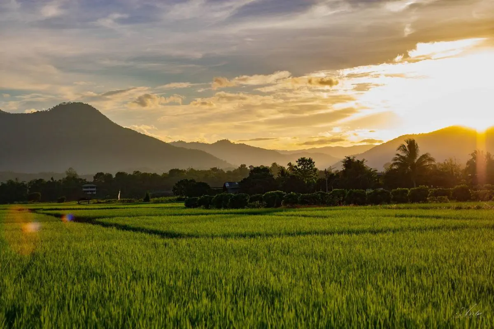
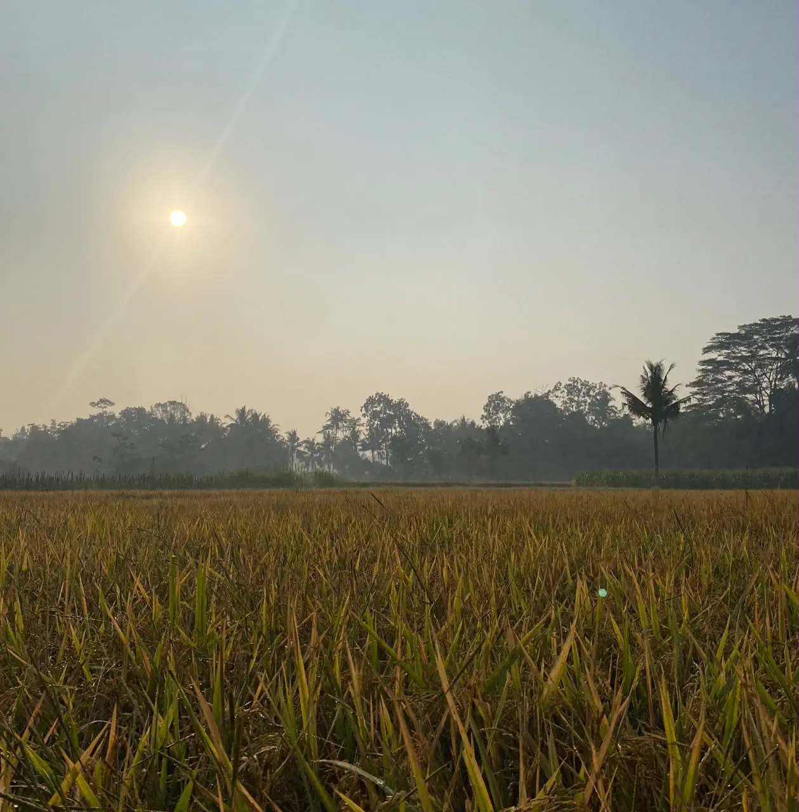
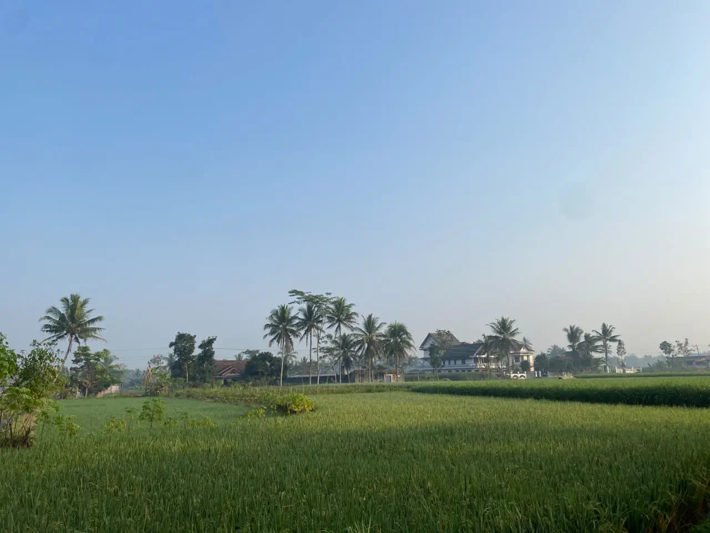
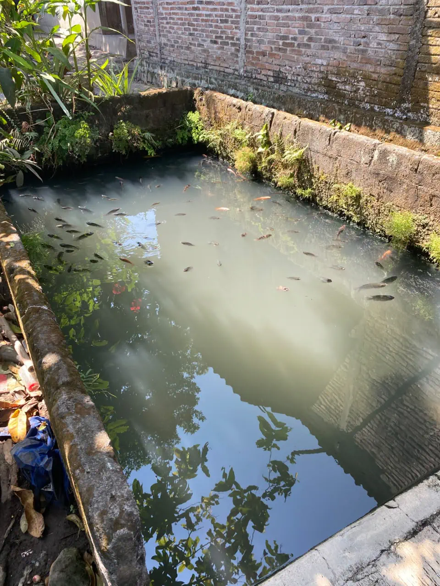
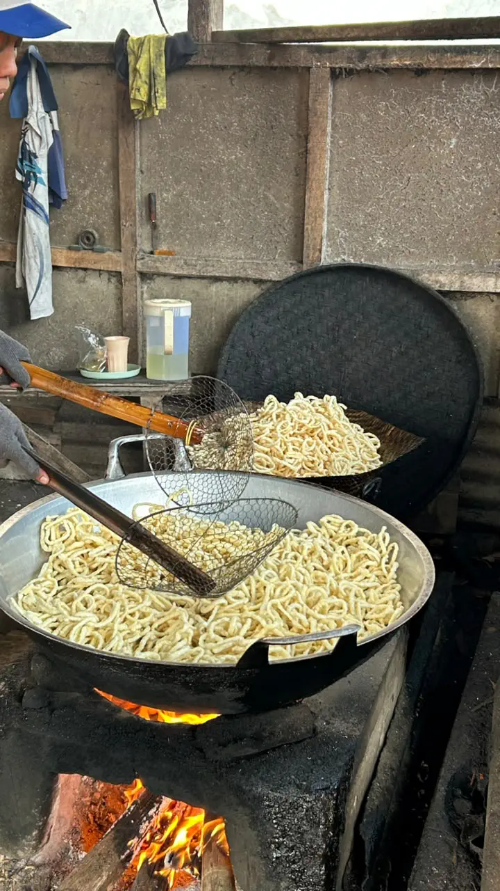
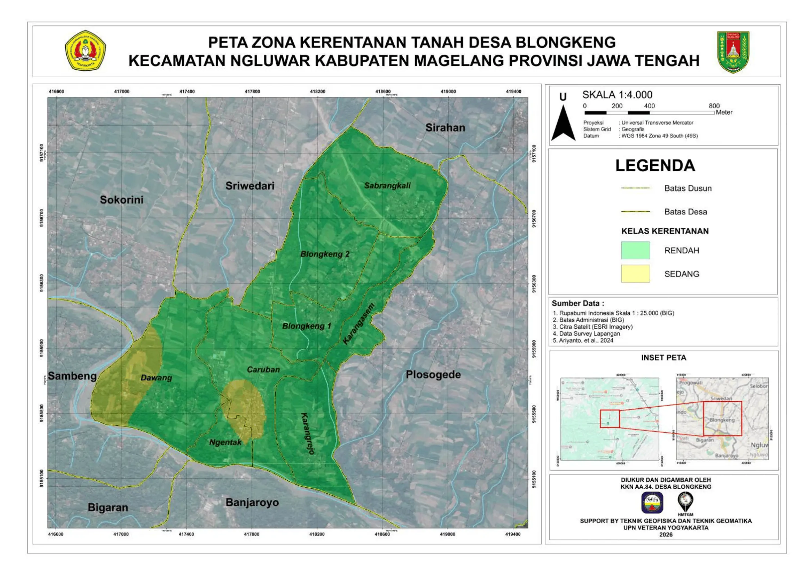
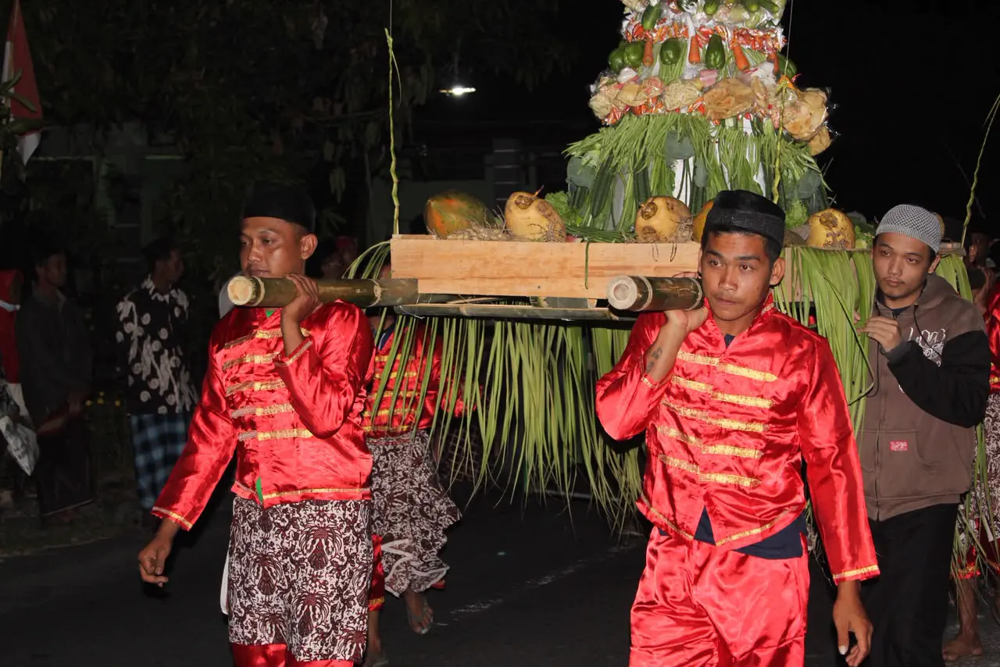
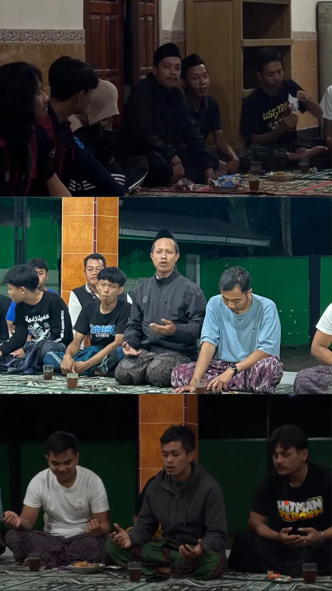
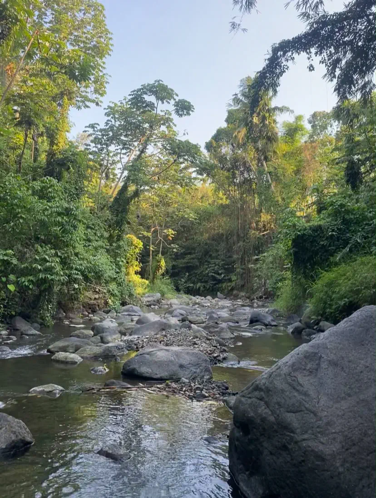
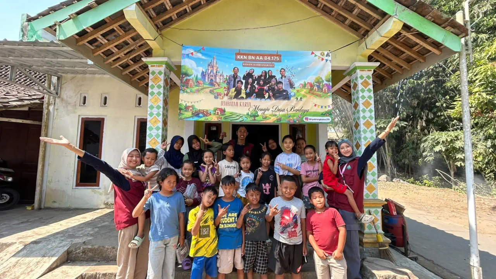

Tata Kelola
Struktur Perangkat Dusun
Informasi susunan organisasi Dusun Sabrangkali.


Wilayah pemukiman yang asri, sejuk, dan dikelilingi bentang alam subur — menjadikan Sabrangkali salah satu kawasan yang tetap menjaga kelestarian alam di tengah perkembangan zaman, dengan warga yang guyub rukun dan menjunjung tinggi gotong royong.
Dusun Sabrangkali merupakan sebuah wilayah pemukiman yang asri, sejuk, dan dikelilingi oleh bentang alam yang subur. Secara geografis, letak dusun ini memberikan keunggulan tersendiri dalam sektor agraris dan lingkungan hidup, menjadikannya salah satu kawasan yang tetap mempertahankan kelestarian alam di tengah perkembangan zaman.
Kehidupan sosial di Dusun Sabrangkali dibangun di atas pondasi nilai-nilai keagamaan yang kuat dan semangat gotong royong yang kental. Masyarakat Sabrangkali dikenal sangat guyub rukun, saling bahu-membahu dalam setiap kegiatan kemasyarakatan, serta menjunjung tinggi toleransi antarwarga. Pembangunan di dusun ini bergerak dinamis berkat sinergi yang kokoh antara tokoh masyarakat, perangkat dusun, warga, hingga peran aktif pemuda-pemudi Karang Taruna.

Pembangunan Fasilitas — Membantu Desa dalam pembangunan fasilitas umum dusun.
Sinergi Komunitas — Memperkuat kerjasama antara tokoh masyarakat, warga dan karang taruna.
Kelestarian Lingkungan — Menjaga keasrian dusun.
Karakter Warga — Menciptakan dusun Sabrangkali yang religius dan guyub rukun.
Informasi susunan organisasi Dusun Sabrangkali.
Sektor unggulan yang menjadi penggerak ekonomi, kemandirian, dan kesejahteraan warga dusun.

Dengan tanah subur dan pengairan melimpah, komoditas utama berupa padi, jagung, serta berbagai sayuran segar dikelola secara tekun oleh kelompok tani setempat.

Pemanfaatan sumber air bersih lokal mendukung budidaya perikanan air tawar; warga aktif mengelola kolam pembesaran ikan konsumsi sebagai mata pencaharian penting.

Kreativitas warga terwujud dalam industri rumah tangga skala mikro, dari makanan ringan tradisional hingga kerajinan tangan lokal, terus didorong guna memperluas lapangan kerja.
Peta zona kerentanan tanah Desa Blongkeng, Kecamatan Ngluwar, Kabupaten Magelang — mencakup wilayah Dusun Sabrangkali beserta dusun-dusun sekitarnya, disusun berdasarkan hasil survei lapangan dan analisis data spasial.

Skala 1:4.000 · Proyeksi Universal Transverse Mercator · Datum WGS 1984 Zona 49 South (49S). Sumber data: Rupabumi Indonesia skala 1:25.000 (BIG), batas administrasi (BIG), citra satelit ESRI, dan survei lapangan. Didukung oleh Teknik Geofisika dan Teknik Geomatika, UPN Veteran Yogyakarta.
Dokumentasi visual keindahan alam dan kebersamaan warga di Dusun Sabrangkali.




Kami membuka pintu kerja sama bagi akademisi, investor, maupun instansi yang ingin membantu mengembangkan potensi lokal Dusun Sabrangkali.